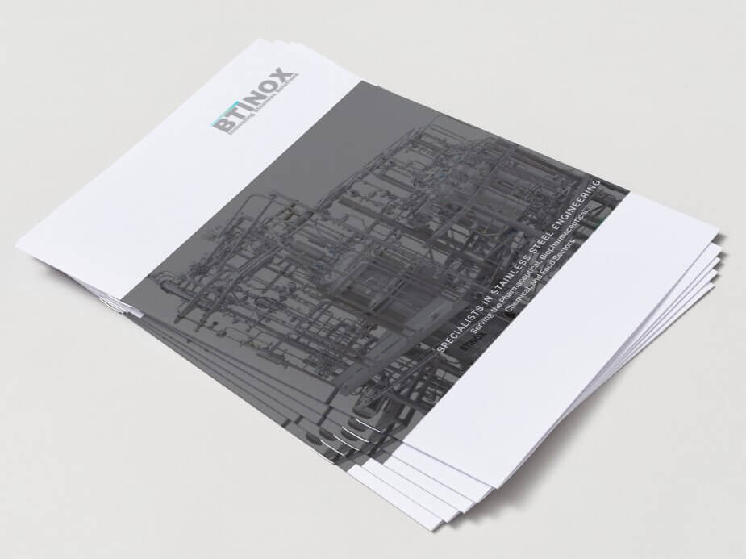

Jeklene požarne stopnice po predpisih – certificirane, protizdrsne in montirane v skladu z vsemi zahtevami požarne varnosti.
Zaprosite za ponudboPožarne stopnice morajo zadostiti strogim zahtevam predpisov o požarni varnosti. BT Inženiring projektira in izdeluje zunanje požarne stopnice in evakuacijske poti po standardu SIST EN 1090-2 in v skladu z veljavno slovensko zakonodajo.
Vse konstrukcije so varjene po certifikatu EN 1090-2, EXC 2. Jeklene stopnice so pogosto cinkane (galvanizirane) ali lakirane za dolgotrajno odpornost na vremenske vplive. Na zahtevo izvedemo izračun statike in pripravimo celotno dokumentacijo.

Vsaka požarna stopnica, ki zapusti našo delavnico, je narejena natančno, certificirano in z mislijo na varnost.
Varjenje in konstrukcija po standardu SIST EN 1090-2, EXC 2 – certifikat zagotovljen.
Cinkanje, lakirna zaščita ali inox izvedba za dolgo življenjsko dobo na prostem.
Dimenzioniranje po predpisih o evakuacijskih poteh za hitro in varno evakuacijo.
Statika, PZI dokumentacija in certifikati – vse v enem paketu.
Izberemo pravo vrsto glede na vaš objekt, predpise in estetske zahteve.
Navpične jeklene lestve z varnostnim košem za dostop na streho in industrijsko opremo.
Pohodne stopnice z ograjo za evakuacijo iz večetažnih objektov – s certifikatom.
Predmontažne jeklene stopniščne module za hitro inštalacijo na industrijskem objektu.
Preprost in pregleden postopek – od prvega stika do montaže na objektu.
Stopimo v stik, obiščemo lokacijo in skupaj z vami določimo mere, material in obliko.
Pripravimo tehnični načrt in cenovno ponudbo prilagojeno vašim željam in proračunu.
Vaše naročilo natančno izdelamo v lastni kovinarski delavnici z modernimi stroji.
Dostavimo in profesionalno montiramo na objektu – predaja z garancijo in brez skrbi.